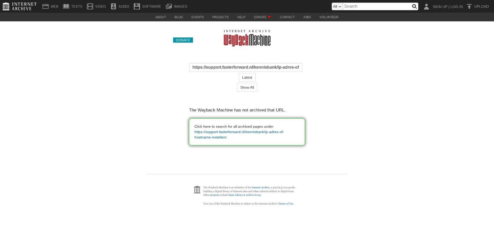

PortefeuilleSignalen gebruiken

Tekstinhoud
PortefeuilleSignalen gebruiken | Support
---
PortefeuilleSignalen gebruiken
De PortefeuilleSignalen software van De Nationale Hypotheekbond signaleert kansen in je portefeuille. Deze signalen ontvang je in eBlinqx, wanneer deze software is gekoppeld aan eBlinqx. eBlinqx synchroniseert met deze koppeling automatisch iedere nacht de dossiers naar Hypotheekbond en haalt vervolgens de signalen binnen die Hypotheekbond afgeeft.
Let op: eBlinqx haalt alleen de signalen binnen die Hypotheekbond afgeeft. Het is niet dat dossiers die in Hypotheekbond worden aangemaakt gesynchroniseerd worden naar eBlinqx.
De Nationale Hypotheekbond levert daarnaast actuele rentestanden en geeft inzicht in de maximale hypotheek, woningwaarde en verduurzaming.
Kansen en bedreigen bekijken
Signalen eenvoudig communiceren naar klanten
Dossiers uitsluiten
Kantoren uitsluiten
Handmatig synchroniseren
Wat wordt er gesynchroniseerd?
Pensioeninkomen en dienstverband
Hoofdsom en restschuld van hypotheek
Taxatiedatum
Dossier zonder hypotheek en levensverzekering
Kansen en bedreigen bekijken
Een overzicht van deze signalen vind je onder 'Producten – Hypotheekbond':
Het overzicht van hypotheken in je portefeuille die kunnen worden overgesloten, ziet er dan bijvoorbeeld zo uit:
Signalen eenvoudig communiceren naar klanten
In 4 stappen kun jij je klanten moeiteloos en precies op het juiste moment informeren over deze kansen en bedreigingen. Lees hier meer daarover.
Dit is mogelijk voor de volgende signalen:
Besparing ORV mogelijk
Oversluiten (met goedkopere maandlast)
Duurzaam oversluiten (met goedkopere maandlast)
Betaalbaarheid wonen bij naderen pensioenleeftijd
Rentevastperiode loopt af
Dossiers uitsluiten
Het is mogelijk om dossiers met een bepaalde status uit te sluiten, dit kun je zelf instellen door rechtsboven op de 3 streepjes te klikken.
Hier heb je de mogelijkheid om specifieke dossier statussen uit te sluiten.
Kantoren uitsluiten
Via het hamburger menu kan je kiezen voor 'Kantoorselectie'. Hier kan je aangeven of de dossiers van alle kantoren worden gesynchroniseerd of dat dossiers van bepaalde kantoren niet worden meegenomen in de synchronisatie.
Handmatig synchroniseren
Wanneer je niet wilt wachten op de nachtelijke synchronisatie, kun je de informatie van Hypotheekbond handmatig binnenhalen. Deze functionaliteit is in het klantdossier aanwezig, onder de tab 'Export -Hypotheekbond'.
Wanneer er op de tab geklikt wordt, gaat het systeem de gegevens direct (opnieuw) synchroniseren naar PortefeuilleSignalen. In PortefeuilleSignalen kunnen dan eventuele vergelijkingen of berekeningen uitgevoerd worden. Deze staan los van eBlinqx en worden niet terug gesynchroniseerd.
Wat wordt er gesynchroniseerd?
eBlinqx stuurt diverse dossierinformatie naar PortefeuilleSignalen. Dit zijn onder andere de volgende gegevens.
Persoonsgegevens
Naam, Adresgegevens, geslacht, roker, burgerlijke staat, geboortedatum, telefoonnummers, e-mailadres, burgerservicenummer, bruto jaarinkomen, type dienstverband, pensioeninkomen
Pand
Taxatiewaarde, executiewaarde, taxatiedatum, WOZ waarde, WOZ peildatum, type woning
Hypotheken
Offertenummer/hypotheeknummer, bank, product(status), hoofdsom, oorspronkelijke hoofdsom, inschrijving, restschuld, leningdelen, looptijd, risicoklasse, NHG, einddatum, rentepercentage, rentekorting, einddatum rentevastperiode, passeerdatum, kapitaalverzekering (indien gekoppeld aan hypotheek).
Let op: Hypotheken met hetzelfde onderpand en met de systeemstatus lopend (bijvoorbeeld een hypotheek en een verhoging) worden gedeeld met PortefeuilleSignalen.
Let op: Hypotheken met verschillende onderpandadressen worden niet beide gesynchroniseerd. Enkel de meest recente hypotheek met systeemstatus lopend wordt gesynchroniseerd.
Verzekeringen
Verzekeraar, verzekerde, type verzekering, polisnummer, begin en einddatum, doelkapitaal, premie, premieperiode, premieopslag, huidig saldo/afkoopwaarde, looptijd premie, eerste storting, verwacht kapitaal
Rekeningen
Type, maatschappij, IBAN rekeningnummer, box, ingangsdatum, einddatum, mutatiebedrag/inleg, mutatiebedrag looptijd, eerste storting, doelkapitaal, risicoprofiel, mutatie bedrag percentage
Let op: indien je na het synchroniseren in eBlinqx een product archiveert dan moet je dit product nog wel zelf verwijderen in PortefeuilleSignalen. Anders blijft het product bekend bij de PortefeuilleSignalen.
Pensioeninkomen en dienstverband
Het pensioeninkomen wordt gedeeld, zodat PortfeuilleSignalen de informatie en mogelijkheden voor een verantwoorde hypotheek, hypotheek oversluiten en topafslag beter kan berekenen.
Als een klant maar één inkomen heeft in eBlinqx, wordt het bijbehorende dienstverband (inclusief type) nu ook meegestuurd naar PortefeuilleSignalen. Hierdoor heb je in beide systemen een duidelijk beeld van de klant. Wanneer er twee vormen van inkomens zijn, wordt het dienstverband niet meegestuurd.
Hoofdsom en restschuld van hypotheek
De huidige stand van een hypotheek komt binnen via een IX bericht van de maatschappij of wordt ingelezen door middel van een maatschappijbestand. Op dit moment werkt alleen de maatschappij Aegon en Florius nog met deze functionaliteit. Als de 'nieuwe' hypotheekdata van de maatschappij in eBlinqx staat, wordt deze naar PortefeuilleSignalen verstuurd. Als deze niet geüpdatet is, wordt de oorspronkelijke hypotheeksom meegestuurd. PortefeuilleSignalen berekent dan zelf de huidige hypotheeksom.
Taxatiedatum
De taxatiedatum i.c.m. de nieuwe marktwaarde wordt naar PortefeuilleSignalen verstuurd. Deze informatie wordt door de maatschappij via HDN (AX/IX) en maatschappijbestanden naar de eBlinqxomgeving van het intermediair gestuurd. Hierdoor is de informatie in PortefeuilleSignalen accurater en worden er betere berekeningen gemaakt omtrent verantwoorde hypotheek, oversluiten, renteverlenging, topafslag, loan-to-value en loan-to-income. Deze waarde kan je vinden via het hypotheekproduct – Tabblad Wonen.
Dossier zonder hypotheek en levensverzekering
Een klantdossier zonder een product, kan nu ook gesynchroniseerd worden. Deze functionaliteit is optioneel. Standaard staat deze optie uit, maar deze optie kan aangevraagd worden bij onze supportafdeling.
De naam- en adresgegevens van het dossier worden dan naar PortefeuilleSignalen gestuurd. Door deze synchronisatie heb je in beide softwareprogramma's een vollediger overzicht van jouw klanten. PortefeuilleSignalen controleert daarnaast of continu of een woning te koop staat op Funda. Zodra het adres te koop staat, noemen we dit een 'verhuissignaal'. In eBlinqx ziet de gebruiker dan dat zijn klant zijn huis te koop heeft staan.
Wil je gebruik maken van deze koppeling? Stuur dan een e-mail naar support-eblinqx@blinqx.tech.
Laatste update: 15 oktober 2025
Was deze informatie nuttig?
Ja Nee